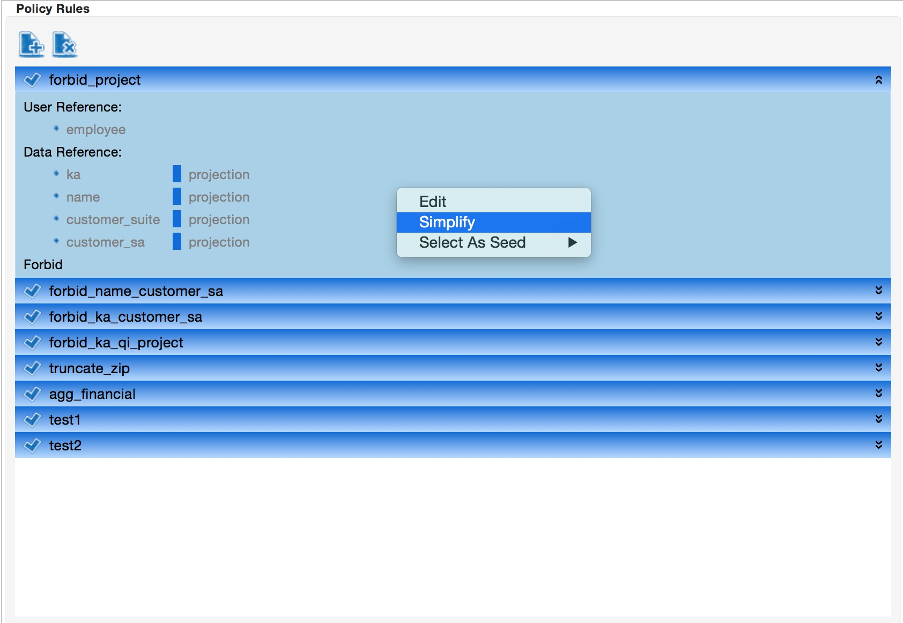
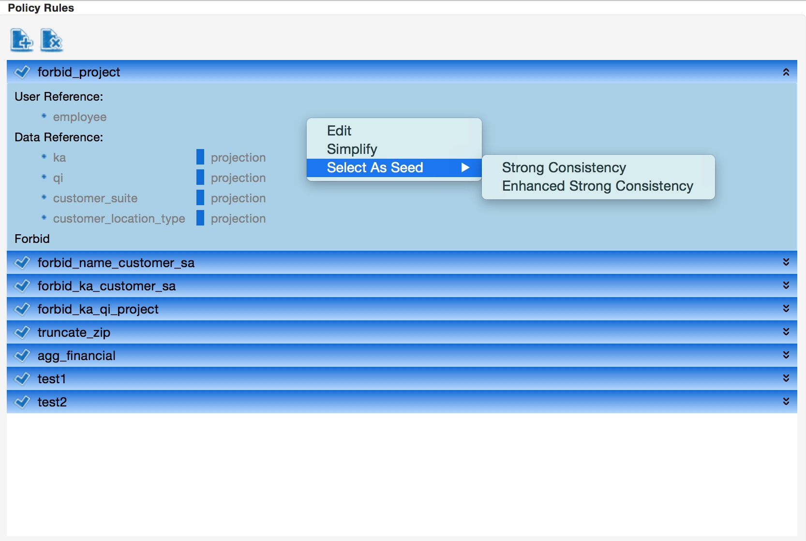

To facilitate user write and analyze the PSpec rules, we have developed several policy analysis algorithms. All of these analysis algorithms can be triggered by switching to the rule view and clicking the menus under "Analysis". In this document, we only briefly discuss how to use these analysis algorithms. For the detailed explanation, please refer to our technical report.
For all analysis discussed below (except simplification analysis), the rules are first expanded for the ease of analysis. The process of rule expansion is as follows. For each rule of which the data reference is single but refers multiple data categories, we create multiple rules each of which only refers one data category, and the id of the expanded rule is the concatenation of the id of the original rule and the name of the data category.
Since a rule may refer multiple user categories/data categories/restrictions, some of these elements may be redundant. For example, if a rule refers two user categories employee and manager, then manager is redundant and the rule simplified. Thus, rule simplification tries to find all possible redundant elements within each rule.
To simplify the rules, the policy writer has two options. One option is to click "Simplify" menu under "Analysis" menu, and this will simplify all rules in the current selected policy. Another option is to right click a rule in the rule view, which would trigger a popup menu, and click "Simplify" menu in the popup menu as show below. This will only simplify the rule being selected.

After the simplification analysis finishes, the policy writer can choose whether or not remove the redundant elements automatically. If not, the redundant elements are shown in the output view as below, and the policy writer can further simplify the rules manually by clicking "Fix" menu.
Different from simplification analysis, which detects redundant elements within each rule, redundant analysis tries to find redundant rules in a policy. Since we require a query should satisfy all applicable rules in a policy, it is possible that for any query satisfies some rule r, the query also satisfies another rule r'. In this case, r' is redundant as it does not specify any more restrictions than r. Redundancy analysis then tries to find all such rules r' which are covered by some other rule r.
To perform redundancy analysis, one can click Redundancy Analysis menu under Analysis Menu. After the analysis finishes, the policy writer can also choose whether or not remove the redundant rules automatically. If not, the policy writer can further remove the rules manually by clicking "Fix" menu.
Consistency analysis tries to find inconsistent rule sets. Intuitively, a set of rules is inconsistent if the rules cannot be satisfied together, which means certain data categories cannot be accessed for certain user category. These inconsistent rule sets may represent possible errors among the rules, and should be fixed manually.
We have developed four consistency analysis algorithms, namely Normal Consistency, Approxiamte Consistency, Strong Consistency and Enhanced Strong Consistency. These algorithms differ in term of the complexity as well as the conservativeness.
All these algorithms can be triggered by click the corresponding menu item under "Analysis" menu. Moreover, since Strong Consistency and Enhanced Strong Consistency require a seed rule, the policy writer can also choose a seed rule manually and run the analysis algorithms by clicking the popup menu as below.

In the following, we briefly discuss the intuitions and criteria of these consistency analysis algorithms.
A set of rules (expanded) is said to be normally inconsistent if certain data categories together are not accessible for some user category.
For example, suppose rule r1 requires financial must be desensitized with sum operation for all user categories, while rule r2 requires analyst that when accessing financial and name together, analyst must desensitize financial with avg operation. Thus, analyst cannot access financial and name together since analyst cannot desensitize financial properly to satisfy both the two rules.
Approximate consistency analysis is much faster than normal consistency analysis at the price of false positive. A set of rules is approximately inconsistent if there exist a combination of restrictions in each rule such that some user category cannot desensitize one data category to satisfy these restrictions. However, it is still possible for the user category to satisfy all these rules since one can satisfy other restrictions in a rule.
Different from previous two consistency analysis, strong consistency takes into consideration the number of data categories accessed together. A set of rules is strong inconsistent w.r.t. a seed rule r if certain user category cannot access the data categories referred in r together. In other words, the seed rule r must be triggered. This avoids the problem incurred by the number of data categories accessed together since the more data categories accessed together, the more information is leaked because of the association among them.
As the name suggests, enhanced strong consistency analysis is an enhanced version of strong consistency analysis. A set of rules is enhanced strong inconsistent w.r.t. a seed rule r if certain user category cannot access any combination of the data categories referred in r together. This is more stronger since it implies the user category cannot access the data categories together whenever r is triggered.